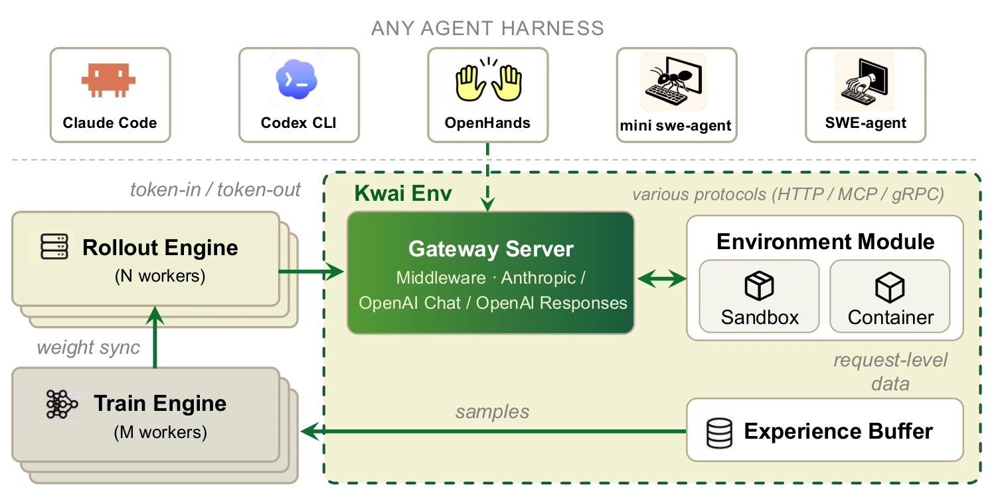

Long coding tasks demand more than generating a plausible function. The model must use tools correctly, retain context and avoid repetitive behavior across many actions, while remaining practical to deploy.
长程编程任务不仅需要生成合理的函数，还要求模型正确调用工具、保持上下文并避免重复行为，同时兼顾部署成本。
This release brings that deployment question into focus: an open-weight coding model needs useful task performance as well as reliable behavior at the tool interface.
这一版本关注实际部署：开放权重编程模型既需要有效的任务表现，也需要在工具接口上保持可靠行为。
Post-training for reliable tool use面向可靠工具使用的后训练
The release starts from Qwen3.6-35B-A3B, with 127K supervised examples followed by reinforcement learning. It retains the V2.5 infrastructure: token-consistent rollout and training, truncated importance weights, checked execution environments and rewards that recognize useful intermediate progress.
该版本以 Qwen3.6-35B-A3B 为基础，先使用 127K 条样本进行监督微调，再开展强化学习。训练沿用 V2.5 的基础设施，包括 rollout 与训练的 token 一致性、截断重要性权重、经过检查的执行环境，以及能够识别中间有效进展的奖励。
Adapting rewards to the base model was essential. The model card describes collapse under a binary reward, with some turns producing more than 70 parallel tool calls. Penalties for excessive calls, failures, empty tool blocks and repetition enabled ten stable epochs. Reported malformed tool tags fell from 9.34% to 0.28%, while continuous single-turn repetition fell from 0.34% to zero. These are release-reported behavioral measurements, distinct from task benchmark scores.
奖励设计需要适应基础模型的行为。模型卡记录了二值奖励下的训练崩溃，部分轮次产生超过 70 个并行工具调用。针对过量调用、调用失败、空工具块和重复内容的惩罚，使训练稳定进行了十个 epoch。报告中异常工具标签比例从 9.34% 降至 0.28%，单轮持续重复从 0.34% 降至零。这些是发布方报告的行为指标，与任务 benchmark 分数不同。
{kind=link}

Reading the release evaluations理解版本评测
The model card downloads public peer weights and evaluates them through a common in-house pipeline, rather than copying each model’s published headline score. The comparison spans repository coding, multilingual tasks, tool use and scientific coding. Most tests run once unless an obvious error is detected. This makes the harness, context budget and serving configuration part of the result, and limits how confidently small score differences can be ranked.
模型卡下载公开对比模型权重，在统一内部流程中评测，而不是汇总各家公布的最高分。比较覆盖仓库编程、多语言、工具使用和科学编程。多数测试只运行一次，除非发现明显错误，因此框架、上下文预算和服务配置都属于结果的一部分，小分差的排名也需要谨慎理解。
Model evaluations模型评测
Published results, with the evaluation setting kept alongside each comparison. Scores are percentages; higher is better. Bold marks the highest reported value in each row, including ties.保留原始评测条件；分数单位为百分比，越高越好。粗体表示每行已报告数值中的最高值（含并列）。
| Benchmark | KAT-Coder V2.5-Dev | Qwen3.5-27B | Qwen3.6-35BA3B | Gemma4-31B | Qwen3.5-35BA3B | Ornith-1.0-35B | Gemma4-26BA4B | Qwen3-Coder-30B |
|---|---|---|---|---|---|---|---|---|
| SWE-bench VerifiedRepository issue resolution | 69.4% | 68.6% | 64.4% | 60.6% | 58.6% | 55.8% | 35.8% | 31.8% |
| SWE-bench MultilingualMultilingual repository tasks | 63% | 57.67% | 57% | 49.33% | 47.67% | 51.67% | 27.33% | 20.67% |
| SWE-bench ProSoftware engineering | 45.96% | 42.13% | 40.63% | 32.97% | 38.03% | 34.47% | 9.58% | 19.84% |
| Terminal-Bench 2.1Average of Terminus-2 and Claude Code | 41.02%32.60 / 49.44 | 34.84%41.57 / 28.10 | 32.02%34.83 / 29.20 | 32.59%30.34 / 34.83 | 26.12%26.44 / 25.80 | 35.98%35.96 / 36.00 | 20.94%27.27 / 14.60 | 13.5%10.11 / 16.90 |
| PinchBenchOpenClaw agent tasks | 93.43% | 90.71% | 92.21% | 85.53% | 88.75% | 91.62% | 82.01% | 72.3% |
| SciCodeScientific programming | 44.2% | 25.58% | 37.53% | 33.19% | 27.73% | 30.34% | 30.84% | 18.27% |
| KAT-Code-BenchCoding evaluation | 46.21% | 44.83% | 42.76% | 37.93% | 35.86% | 33.1% | 22.06% | 15.17% |
All results are in-house re-evaluations, generally one run per benchmark; they are not the peers’ official scores. All use pass@1 and 256k context. SWE and KAT-Code use Claude Code 2.1.195 (temperature 1.0, top_p 0.95); terminal tests use Terminus-2 / Claude Code (0.7, 1.0); PinchBench uses OpenClaw 2026.3.13 (0.7, 1.0); SciCode uses 0.6, 1.0. The model card reports harness/tool mismatches affecting several peers. Small gaps should not be read as statistically established rankings. Source data
Where the model is competitive模型在哪些方面具有竞争力
In the KAT team’s in-house evaluation, the model scores 69.4 on SWE-bench Verified, 63.0 on Multilingual and 45.96 on Pro. The SWE tests use Claude Code 2.1.195, pass@1 and a 256k context. These are single-run reproductions under the stated harness; peer scores can differ from their official reports.
在 KAT 团队内部复测中，SWE-bench Verified、Multilingual、Pro 分别为 69.4、63.0、45.96。SWE 评测使用 Claude Code 2.1.195、pass@1 和 256k 上下文。这些是特定框架下的单次复测结果，可能与对比模型的官方分数不同。
Deployment is more than parameter count部署不只取决于参数量
Open weights make the model useful as an inspectable deployment and research artifact. The release provides a starting point for studying long-horizon behavior under a chosen harness, but the card’s ranking is not independent evidence of universal superiority. Reproducing the evaluation protocol and checking behavior on the intended workload are the natural next steps before selecting a model.
开放权重使模型成为可检查、可部署的研究产物，也为特定框架下的长程行为研究提供起点。但模型卡排名并不是普遍领先的独立证据。在选择模型前，复现评测协议并检查目标工作负载上的行为，仍是必要的验证。
Paper & authors论文与作者
Cite this work
@misc{kwaipilot2026katcoderdev,
title = {KAT-Coder-V2.5-Dev},
author = {{Kwaipilot}},
year = {2026},
howpublished = {Hugging Face model card},
url = {https://huggingface.co/Kwaipilot/KAT-Coder-V2.5-Dev},
note = {Accessed 2026-09-21}
}
@misc{huang2026katcoderv25technicalreport,
title = {KAT-Coder-V2.5 Technical Report},
author = {Bo Huang
and Fengxiang Li
and Hao Xu
and Haoyang Huang
and Hongyi Fu
and Jinhua Hao
and Kun Yuan
and Minglei Zhang
and Pengcheng Xu
and Shiyang Liu
and Wenhao Zhuang
and Yuze Shi
and Zongxian Feng
and Chao Wang
and Cheng He
and Chongling Rao
and Deyu Cao
and Fan Yang
and Gang Xiong
and Haochen Liu
and Jiabao Li
and Jian Liang
and Jinghui Jia
and Jingwen Chang
and Jun Du
and Junyu Shi
and Min Li
and Mingqi Wu
and Qiang Gao
and Shangpeng Yan
and Shaotong Qi
and Shu Xu
and Shuo Zhou
and Tiankuo Xu
and Tong Zheng
and Weilun Zhao
and Xiancheng Meng
and Xianda Sun
and Xiaoyu Jiang
and Xunhao Jia
and Yao Xia
and Yimeng Xu
and Yinghan Cui
and Yingpeng Chen
and Yiwen Ning
and Yong Wang
and Yuxuan Sun
and Zhongsheng Liu
and Ming Sun
and Cheng Luo
and Chen Yang
and Han Li
and Kun Gai},
year = {2026},
eprint = {2607.05471},
archivePrefix = {arXiv},
primaryClass = {cs.SE},
url = {https://arxiv.org/abs/2607.05471}
}